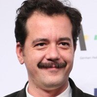
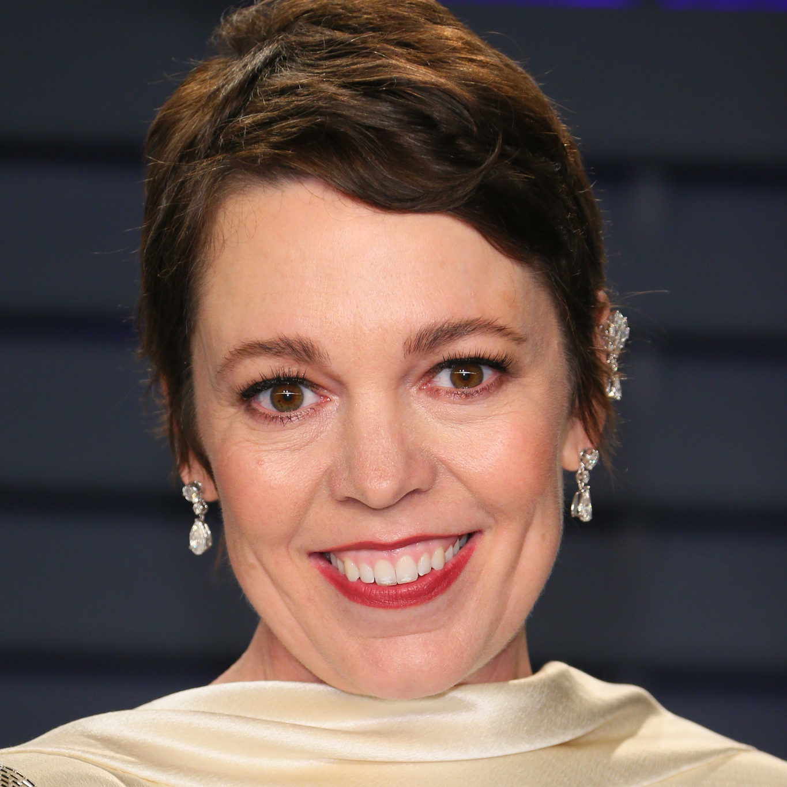
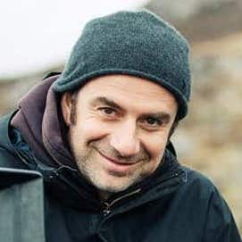

| Summary | |
| Occupations | writer, director, producer |
| Birth | September 23, 1973 (Age 49) Pangrati, Athens, Greece |
| Years Active | 2001 - present |
| Genres | Dark Comedy, Drama, Historical Drama |
| Biography | Yorgos Lanthimos was born in Athens, Greece in 1973. After studying Film and Television at the Stavrakos Film School in Athens, he began his career directing dance videos in collaboration with Greek choreographers, in addition to TV commercials, music videos, short films and theater plays. His breakout second feature film, "Dogtooth", won the Un Certain Regard prize at the 2009 Cannes Film Festival, in addition to other awards and nominations at festivals worldwide, including a nomination for the Best Foreign Language Film Academy Award in 2011. His first English language film, "The Lobster", was nominated for the Palme d'Or at the 2015 Cannes Film Festival and for the Best Original Screenplay Academy Award. By this point, Lanthimos' films had become known for their dark, deadpan style and stark, impressionistic visuals. He went on to create his fifth feature film, 2017's "The Killing of a Sacred Deer", which was also presented in Competition at the 70th Cannes Film Festival where it won the award for the Best Screenplay. Lanthimos's most recent film "The Favorite" is a historical drama/comedy about the British Queen Anne, which was nominated for numerous awards at the 2019 Academy Awards. |
| Website | lanthimos.com |
| Frequent Collaborators |
 Efthimis Filippou-writer, director, producer
Olivia Colman-actress
Thimios Bakatakis-cinematographer
Ed Guiney-producer
|
| Upcoming Work | Poor Things(post-production) |
Yorgos Lanthimos
London, UK-writer/director/producer
